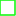

<!doctype html>
<html lang="en">
    <head>
        <meta charset="utf-8">
        <meta http-equiv="X-UA-Compatible" content="IE=edge">
        <meta name="viewport" content="initial-scale=1,user-scalable=no,maximum-scale=1,width=device-width">
        <meta name="mobile-web-app-capable" content="yes">
        <meta name="apple-mobile-web-app-capable" content="yes">
        <link rel="stylesheet" href="css/leaflet.css">
        <link rel="stylesheet" href="css/qgis2web.css"><link rel="stylesheet" href="css/fontawesome-all.min.css">
        <link rel="stylesheet" href="css/leaflet-control-geocoder.Geocoder.css">
        <style>
        #map {
            width: 1076px;
            height: 599px;
        }
        </style>
        <title></title>
    </head>
    <body>
        <div id="map">
        </div>
        <script src="js/qgis2web_expressions.js"></script>
        <script src="js/leaflet.js"></script>
        <script src="js/leaflet.rotatedMarker.js"></script>
        <script src="js/leaflet.pattern.js"></script>
        <script src="js/leaflet-hash.js"></script>
        <script src="js/Autolinker.min.js"></script>
        <script src="js/rbush.min.js"></script>
        <script src="js/labelgun.min.js"></script>
        <script src="js/labels.js"></script>
        <script src="js/leaflet-control-geocoder.Geocoder.js"></script>
        <script src="data/LokasiRHL_1.js"></script>
        <script>
        var highlightLayer;
        function highlightFeature(e) {
            highlightLayer = e.target;

            if (e.target.feature.geometry.type === 'LineString') {
              highlightLayer.setStyle({
                color: '#ffff00',
              });
            } else {
              highlightLayer.setStyle({
                fillColor: '#ffff00',
                fillOpacity: 0.15
              });
            }
        }
        var map = L.map('map', {
            zoomControl:true, maxZoom:28, minZoom:1
        }).fitBounds([[-15.736437220083948,93.60660021620183],[11.020941016043114,141.7429892038073]]);
        var hash = new L.Hash(map);
        map.attributionControl.setPrefix('<a href="https://github.com/tomchadwin/qgis2web" target="_blank">qgis2web</a> &middot; <a href="https://leafletjs.com" title="A JS library for interactive maps">Leaflet</a> &middot; <a href="https://qgis.org">QGIS</a>');
        var autolinker = new Autolinker({truncate: {length: 30, location: 'smart'}});
        var bounds_group = new L.featureGroup([]);
        function setBounds() {
        }
        map.createPane('pane_GoogleSatelliteHybrid_0');
        map.getPane('pane_GoogleSatelliteHybrid_0').style.zIndex = 400;
        var layer_GoogleSatelliteHybrid_0 = L.tileLayer('http://mt1.google.com/vt/lyrs=y&x={x}&y={y}&z={z}', {
            pane: 'pane_GoogleSatelliteHybrid_0',
            opacity: 1.0,
            attribution: '',
            minZoom: 1,
            maxZoom: 28,
            minNativeZoom: 0,
            maxNativeZoom: 22
        });
        layer_GoogleSatelliteHybrid_0;
        map.addLayer(layer_GoogleSatelliteHybrid_0);
        function pop_LokasiRHL_1(feature, layer) {
            layer.on({
                mouseout: function(e) {
                    for (i in e.target._eventParents) {
                        e.target._eventParents[i].resetStyle(e.target);
                    }
                },
                mouseover: highlightFeature,
            });
            var popupContent = '<table>\
                    <tr>\
                        <th scope="row">Kode</th>\
                        <td>' + (feature.properties['Kode'] !== null ? autolinker.link(feature.properties['Kode'].toLocaleString()) : '') + '</td>\
                    </tr>\
                    <tr>\
                        <th scope="row">BPDASHL</th>\
                        <td>' + (feature.properties['BPDASHL'] !== null ? autolinker.link(feature.properties['BPDASHL'].toLocaleString()) : '') + '</td>\
                    </tr>\
                    <tr>\
                        <th scope="row">PROVINSI</th>\
                        <td>' + (feature.properties['PROVINSI'] !== null ? autolinker.link(feature.properties['PROVINSI'].toLocaleString()) : '') + '</td>\
                    </tr>\
                    <tr>\
                        <th scope="row">KABUPATEN</th>\
                        <td>' + (feature.properties['KABUPATEN'] !== null ? autolinker.link(feature.properties['KABUPATEN'].toLocaleString()) : '') + '</td>\
                    </tr>\
                    <tr>\
                        <th scope="row">THN_TNM</th>\
                        <td>' + (feature.properties['THN_TNM'] !== null ? autolinker.link(feature.properties['THN_TNM'].toLocaleString()) : '') + '</td>\
                    </tr>\
                    <tr>\
                        <th scope="row">LUAS</th>\
                        <td>' + (feature.properties['LUAS'] !== null ? autolinker.link(feature.properties['LUAS'].toLocaleString()) : '') + '</td>\
                    </tr>\
                    <tr>\
                        <td colspan="2">' + (feature.properties['url'] !== null ? autolinker.link(feature.properties['url'].toLocaleString()) : '') + '</td>\
                    </tr>\
                </table>';
            layer.bindPopup(popupContent, {maxHeight: 400});
        }

        function style_LokasiRHL_1_0() {
            return {
                pane: 'pane_LokasiRHL_1',
                opacity: 1,
                color: 'rgba(35,249,35,1.0)',
                dashArray: '',
                lineCap: 'square',
                lineJoin: 'bevel',
                weight: 1.0,
                fillOpacity: 0,
                interactive: true,
            }
        }
        map.createPane('pane_LokasiRHL_1');
        map.getPane('pane_LokasiRHL_1').style.zIndex = 401;
        map.getPane('pane_LokasiRHL_1').style['mix-blend-mode'] = 'normal';
        var layer_LokasiRHL_1 = new L.geoJson(json_LokasiRHL_1, {
            attribution: '',
            interactive: true,
            dataVar: 'json_LokasiRHL_1',
            layerName: 'layer_LokasiRHL_1',
            pane: 'pane_LokasiRHL_1',
            onEachFeature: pop_LokasiRHL_1,
            style: style_LokasiRHL_1_0,
        });
        bounds_group.addLayer(layer_LokasiRHL_1);
        map.addLayer(layer_LokasiRHL_1);
        var osmGeocoder = new L.Control.Geocoder({
            collapsed: true,
            position: 'topleft',
            text: 'Search',
            title: 'Testing'
        }).addTo(map);
        document.getElementsByClassName('leaflet-control-geocoder-icon')[0]
        .className += ' fa fa-search';
        document.getElementsByClassName('leaflet-control-geocoder-icon')[0]
        .title += 'Search for a place';
        var baseMaps = {};
        L.control.layers(baseMaps,{' Lokasi RHL': layer_LokasiRHL_1,"Google Satellite Hybrid": layer_GoogleSatelliteHybrid_0,}).addTo(map);
        setBounds();
        </script>
    </body>
</html>
